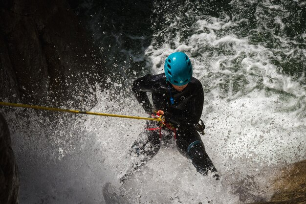
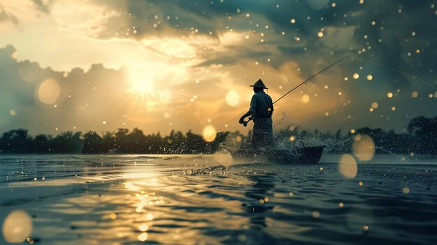

- ट्रैकिंग

- Description:बारिश के मौसम में ट्रेकिंग एक ताजगी भरा अनुभव हो सकता है, जहां हरे-भरे दृश्य और झरने होते हैं। पथों की फिसलन और धाराओं के कारण ट्रेल्स अधिक चुनौतीपूर्ण हो सकते हैं, इसलिए सही गियर होना जरूरी है।
- Popular Spots: पश्चिमी घाट, हिमालय की तराई।
- Gear Needed: वॉटरप्रूफ बूट्स, रेन जैकेट, ट्रेकिंग पोल्स।
- राफ्टिंग

- Description:मानसून के दौरान रिवर राफ्टिंग रोमांचक हो सकती है क्योंकि पानी का स्तर ऊंचा होता है और धाराएं मजबूत होती हैं। यह उन लोगों के लिए एक उत्साहवर्धक खेल है जो एड्रेनालिन का झटका महसूस करना चाहते हैं।
- Popular Spots:ऋषिकेश, मनाली, कोडगू।
- Gear Needed: लाइफ जैकेट, हेलमेट, वॉटरप्रूफ कपड़े
- कायाकिंग

- Description:बारिश में कयाकिंग करना प्रकृति का एक अनोखा दृष्टिकोण प्रदान कर सकता है। नदियाँ और झीलें बारिश के मौसम में अधिक गतिशील हो सकती हैं।
- Popular Spots:केरल के बैकवॉटर्स, गोवा।
- Gear Needed: कयाक, पैडल, लाइफ जैकेट, वॉटरप्रूफ गियर
- माउंटेन बाइकिंग

- Description:गीले ट्रेल्स पर माउंटेन बाइकिंग रोमांचक हो सकती है, लेकिन इसके लिए कौशल और सावधानी की जरूरत होती है। कीचड़ भरे रास्ते अलग चुनौती प्रदान करते हैं और एडवेंचर को और भी मजेदार बनाते हैं।
- Popular Spots:मुन्नार, नंदी हिल्स, लोनावला।
- Gear Needed: माउंटेन बाइक, हेलमेट, वॉटरप्रूफ कपड़े
- Camping

- Description:बारिश में कैम्पिंग एक शांतिपूर्ण अनुभव हो सकता है, जब बारिश की बूँदों की soothing आवाज़ सुनाई देती है। पानी भरने से बचने के लिए ऐसे कैम्पसाइट्स चुनें जिनकी अच्छी ड्रेनेज व्यवस्था हो।
- Popular Spots:वन, हिल स्टेशन, नदी किनारे।
- Gear Needed: वॉटरप्रूफ टेंट, रेनफ्लाय, स्लीपिंग बैग
- Canyoning

- Description:यह विभिन्न तकनीकों का उपयोग करके घाटियों से नीचे उतरने की प्रक्रिया होती है, जैसे कि रैपेलिंग और झरनों से स्लाइडिंग। बारिश का मौसम अधिक पानी की प्रवाह के साथ उत्साह बढ़ा देता है।
- Popular Spots:चेरापूंजी
- Gear Needed:वेटसूट, हार्नेस, हेलमेट
- Waterfall Rappelling

- Description:झरनों से नीचे रैपेलिंग करना एक रोमांचक अनुभव हो सकता है। बारिश के मौसम में बढ़े हुए पानी की प्रवाह इस गतिविधि को और भी नाटकीय बना सकता है।
- Popular Spots:पुणे, माथेरान।
- Gear Needed: हार्नेस, रॉप्स, हेलमेट
- Fishing

- Description:बारिश के मौसम में नदियों या झीलों में मछली पकड़ना प्रभावी हो सकता है क्योंकि मछलियाँ अधिक सक्रिय होती हैं। बारिश खेल के लिए एक शांतिपूर्ण माहौल भी बना सकती है।
- Popular Spots:जलाशय, नदी किनारे।
- Gear Needed: फिशिंग रॉड, बेट, वॉटरप्रूफ गियर
- Safety Tips
- Check Weather Conditions:सुनिश्चित करें कि मौसम गतिविधि के लिए उपयुक्त हो और गंभीर तूफानों से बचें।
- Wear Appropriate Gear: सूखा और सुरक्षित रहने के लिए वॉटरप्रूफ और मजबूत गियर में निवेश करें।
- Follow Local Guidelines: स्थानीय एडवेंचर स्पोर्ट्स संगठनों द्वारा प्रदान की गई सुरक्षा दिशानिर्देशों का पालन करें।
- Stay Hydrated and Energized: गतिविधि के लिए पर्याप्त पानी और नाश्ते का प्रबंध करें।